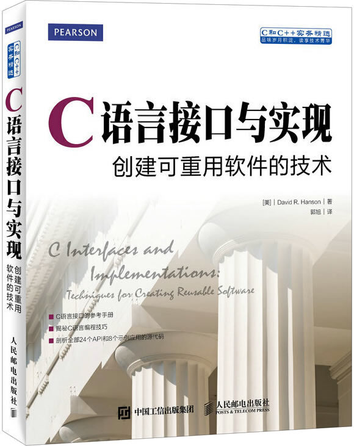

首页 > 书籍下载
《C语言接口与实现(创建可重用软件的技术)》PDF下载（高清完整版）
|  | 作者：[美]戴维 R.汉森（David R. Hanson） |
| 译者：郭旭 | |
| 出版时间：2022年07月01日 | |
| 出版社：人民邮电出版社 | |
| 书号ISBN：9787115402523 | |
| 总页数：368 |
这是一本经典的 C 语言进阶书籍，核心内容是教 C 语言程序员设计和发布新的、可重用的库函数（API、接口）。
这里提供的是《C语言接口与实现(创建可重用软件的技术)》的高清 PDF 下载，内容完整，附带目录标签。
实际开发时，C 程序员会使用大量的库函数（包括标准库和第三方库），但很少有人亲自设计和发布新的、能广泛应用的 API 和库，而这是每个 C 语言程序员必须掌握的技能。这本书实例丰富，详细讲述了 24 个 API 的实现过程，致力于让读者深入地了解设计 API 和库的方法。
再次强调，这本书只适合有 C 语言基础的读者。下面是一位读者对这本书的评价：
内容非常好，涉及各种C语言的高级技巧，仔细研读收获很大。需要注意的是，这是一本C语言中高级书籍，不适合没有C语言编程基础的读者。
另外一位读者也给出了好评：书的内容，自不必说。能买这本书的人都晓得他的价值。毕竟经典。
书籍目录
- 第1章 引言 1
- 1.1 文学程序 2
- 1.2 程序设计风格 6
- 1.3 效率 8
- 1.4 扩展阅读 9
- 1.5 习题 9
- 第2章 接口与实现 11
- 2.1 接口 11
- 2.2 实现 13
- 2.3 抽象数据类型 15
- 2.4 客户程序的职责 17
- 2.5 效率 21
- 2.6 扩展阅读 22
- 2.7 习题 22
- 第3章 原子 24
- 3.1 接口 24
- 3.2 实现 25
- 3.3 扩展阅读 30
- 3.4 习题 31
- 第4章 异常与断言 33
- 4.1 接口 35
- 4.2 实现 38
- 4.3 断言 44
- 4.4 扩展阅读 46
- 4.5 习题 47
- 第5章 内存管理 49
- 5.1 接口 50
- 5.2 产品实现 54
- 5.3 稽核实现 55
- 5.4 扩展阅读 62
- 5.5 习题 63
- 第6章 再谈内存管理 65
- 6.1 接口 65
- 6.2 实现 67
- 6.3 扩展阅读 72
- 6.4 习题 73
- 第7章 链表 75
- 7.1 接口 75
- 7.2 实现 79
- 7.3 扩展阅读 83
- 7.4 习题 83
- 第8章 表 84
- 8.1 接口 84
- 8.2 例子：词频 87
- 8.3 实现 91
- 8.4 扩展阅读 97
- 8.5 习题 97
- 第9章 集合 99
- 9.1 接口 99
- 9.2 例子：交叉引用列表 101
- 9.3 实现 107
- 9.4 扩展阅读 114
- 9.5 习题 115
- 第10章 动态数组 116
- 10.1 接口 116
- 10.2 实现 119
- 10.3 扩展阅读 122
- 10.4 习题 122
- 第11章 序列 123
- 11.1 接口 123
- 11.2 实现 125
- 11.3 扩展阅读 129
- 11.4 习题 129
- 第12章 环 131
- 12.1 接口 131
- 12.2 实现 134
- 12.3 扩展阅读 141
- 12.4 习题 141
- 第13章 位向量 142
- 13.1 接口 142
- 13.2 实现 144
- 13.3 扩展阅读 152
- 13.4 习题 153
- 第14章 格式化 154
- 14.1 接口 154
- 14.2 实现 160
- 14.3 扩展阅读 170
- 14.4 习题 171
- 第15章 低级字符串 172
- 15.1 接口 173
- 15.2 例子：输出标识符 178
- 15.3 实现 179
- 15.4 扩展阅读 189
- 15.5 习题 189
- 第16章 高级字符串 192
- 16.1 接口 192
- 16.2 实现 197
- 16.3 扩展阅读 210
- 16.4 习题 210
- 第17章 扩展精度算术 212
- 17.1 接口 212
- 17.2 实现 217
- 17.3 扩展阅读 230
- 17.4 习题 230
- 第18章 任意精度算术 232
- 18.1 接口 232
- 18.2 例子：计算器 235
- 18.3 实现 240
- 18.4 扩展阅读 254
- 18.5 习题 255
- 第19章 多精度算术 257
- 19.1 接口 257
- 19.2 例子：另一个计算器 263
- 19.3 实现 269
- 19.4 扩展阅读 290
- 19.5 习题 291
- 第20章 线程 292
- 20.1 接口 294
- 20.2 例子 301
- 20.3 实现 311
- 20.4 扩展阅读 335
- 20.5 习题 336
书籍下载
一键登录，免费下载完整版 PDF，文件名称：《C语言接口与实现(创建可重用软件的技术)》.pdf